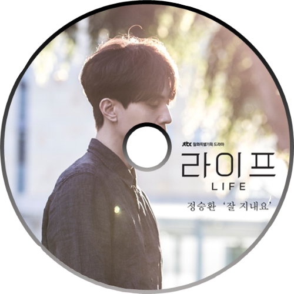
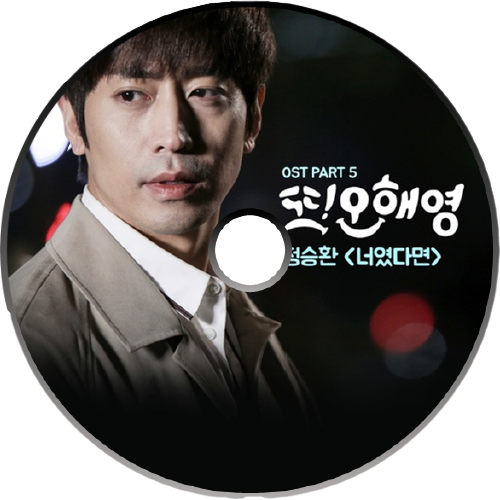
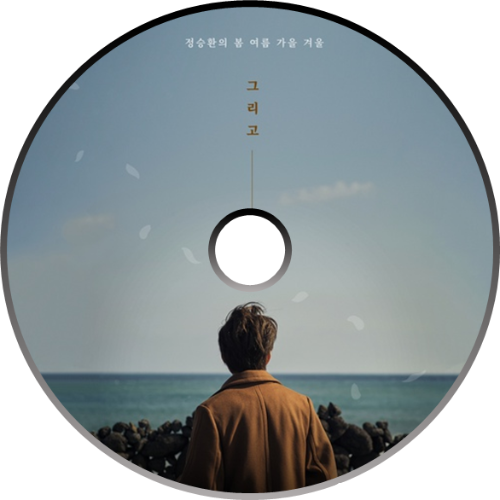
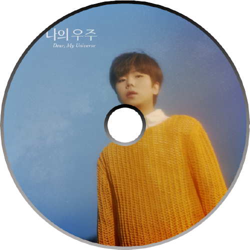

잘 지내요 오늘도
언제부턴가 참 쉬운 그 말
나조차 모르는 내 맘을 들키기 싫어
감추는 게 익숙해져요
내 기억은 언제나 오래된 퍼즐 같아서
늘 하나씩 모자란 그 조각을 찾고 있죠
내 마음은 언제나 쓰다 만 편지 같아서
늘 어딘가 부족한 말들로 끝나버리죠
잘 지내요 오늘도
망설이다가 건넨 내 말에
누군가 조용히 알아주길 바랐어요
말끝에 글썽인 눈물을
내 추억은 언제나 고장 난 시계 같아서
늘 흐르지 못한 채 한 곳에만 고여있죠
내 사랑은 언제나 두고 온 아이 같아서
늘 똑같은 자리에 누군가 기다리고 있죠
사실 난 두려워요
늘 불안한 내 모습
비좁은 이 마음을
누구에게 들킬까
스스로를 지켜낸 시간들
오늘도 잘 지낸단 말로 날 숨기죠
꼭 듣고 싶은 그 말 괜찮아질 거란 말
꼭 하고 싶은 그 말 잘 지낸다는 그 말
긴 하루의 끝에서 다 전하지 못한 말들
나 오늘에 묻은 채 내일도 잘 지낼게요

왜 너에겐 그렇게 어려운지
애를 쓰는 나를 제대로 봐주는 게
너 하나에 이토록 아플 수 있음에 놀라곤 해
고단했던 하루 나는 꿈을 꿔도 아파
너였다면 어떨 것 같아
이런 미친 날들이 네 하루가 되면 말야
너도 나만큼 혼자 부서져 본다면 알게 될까
가슴이 터질 듯 날 가득 채운 통증과
얼마나 너를 원하고 있는지
내가 너라면 그냥 날 사랑할 텐데
내 가슴은 한없이 바닥까지
나를 둘러싸는 모든 게 두려워져
다 사랑에 빠지면 행복한 거라니 누가 그래
뒷모습만 보는 그런 사랑하는 내게
너였다면 어떨 것 같아
이런 미친 날들이 네 하루가 되면 말야
너도 나만큼 혼자 부서져 본다면 알게 될까
가슴이 터질 듯 날 가득 채운 통증과
얼마나 너를 원하고 있는지
내가 너라면 그냥 날 사랑할텐데
이미 너는 내게 대답한 걸 알아
대답 없는 대답의 의미
다 알면서도 난 모르는 척 맴도는데
요즘 나는 어떤 줄 아니
편히 잠을 잘 수도 뭘 삼켜낼 수도 없어
널 바라보다 점점 망가져 가는 날 알긴 할까
죽을 것 같아도 넌 내게 올 리 없대도
딴 곳만 보는 너란 걸 알아도
그런 너를 난 놓을 순 없을 것 같아

멀리 배웅하던 길
여전히 나는 그곳에 서서
그대가 사랑한 이 계절의 오고 감을 봅니다
아무 노력 말아요
버거울 땐 언제든 나의 이름을 잊어요
꽃잎이 번지면 당신께도 새로운 봄이 오겠죠
시간이 걸려도 그대 반드시 행복해지세요
그다음 말은 이젠 내가 해줄 수 없어서
마음속에만 둘게요
꽃잎이 번지면 그럼에도 새로운 봄이 오겠죠
한참이 걸려도 그대 반드시 행복해지세요
끝눈이 와요
혹시 그대 보고 있나요
슬퍼지도록 시리던 우리의 그 계절이 가요
마지막으로 날 떠올려 준다면 안 되나요
다시 한 번 더 같은 마음이고 싶어
우릴 보내기 전에
몹시 사랑한 날들 영원히 나는 이 자리에서

잠이 참 오지 않던 밤
끝이 없을 걸 알지만
나는 먼 여행을 시작했죠
아무도 보이지 않고
아무 향기도 없는 곳
빛이 돼줘요
아득히 꿈처럼 보이던
수많은 추억이 스쳐 가네요
익숙했던 궤도 밖으로 까만 저편 너머로
뒤돌지 않고 가다 보면 언젠가 그댈 만날 수 있을까
하고 싶은 말이 참 많은데
가끔씩 외로울 때
소리 내 노랠 부르죠 음 그대에게 닿길
어쩌면 나의 이 여정은
그대란 우주를 헤매는 걸지도
익숙했던 궤도 밖으로
까만 저편 너머로 뒤돌지 않고 가다 보면
언젠가 그댈 만날 수 있을까
하고 싶은 말이 참 많은데
멋대로 바뀌어 버린 계절과 불안한 나의 그림자 속에
오늘도 난 그댈 찾고 있죠
아주 오랜 시간이 지나
기억을 다 잃어도 그댈 알아볼 수 있어
나의 마음 깊숙이 새겨진 그대
중력이 날 이끌면 유성처럼 달려갈게요
내 여행의 끝은 그대죠